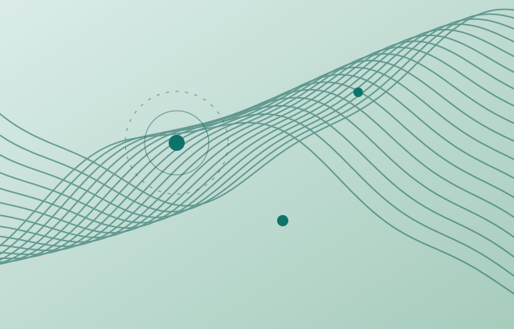
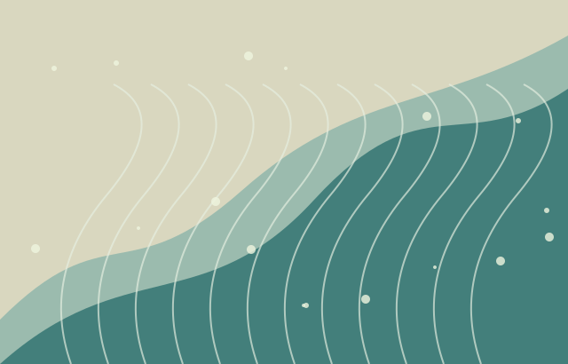
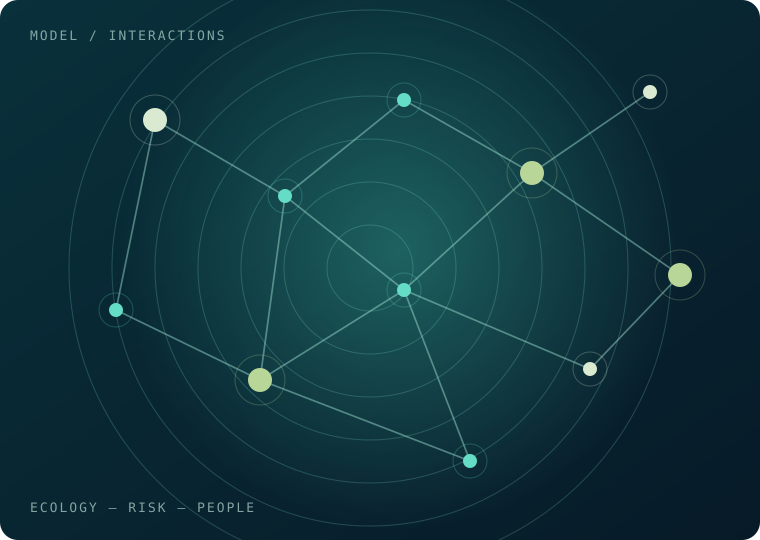

01 — MECHANISMSEcological mechanisms
& scaling
How do metabolism, life histories and species interactions scale up to shape ecosystem responses to environmental change?
I'm Juan Bueno-Pardo, a marine scientist exploring how ecosystems function, respond to change, and connect with the people who depend on them.
The ocean is changing. Understanding why—and what comes next—requires connecting ecological mechanisms with the realities of marine life and human activity.
My work bridges theoretical marine ecology, ecological modelling, biodiversity and climate risk assessment, and fisheries research. I am especially interested in approaches that move beyond describing vulnerability towards explaining the processes behind it.
↘Three interconnected themes shape the questions I am exploring as I develop my Ramón y Cajal research programme.

01 — MECHANISMSHow do metabolism, life histories and species interactions scale up to shape ecosystem responses to environmental change?
How can we integrate ecological processes, multiple pressures and uncertainty to better understand future biodiversity risk?

03 — ADAPTATIONWhen, where and through which ecological pathways can ecosystem-based interventions support marine biodiversity and fisheries?
The next chapter. My incoming Ramón y Cajal appointment provides an opportunity to deepen the mechanistic and quantitative side of my research while retaining a connection to marine socio-ecological questions.
RESEARCH DIRECTION / EVOLVINGFrom modelling frameworks to applied research tools, I work to make complex marine change more understandable and useful.

Within the European ACTNOW project, I have led methodological work on biodiversity risk assessment—bringing together ecological sensitivity, human pressures, exposure and adaptive capacity to support spatially explicit assessments.
Explore ACTNOWClimate-risk methodologies and tools for examining how conservation, restoration and other interventions may alter ecological and social risk.
Project context ↗Quantitative assessments of species, fleets and coastal communities across Portugal and Galicia, linking ecological exposure with social drivers.
Related publications ↗A selection of recent papers spanning climate vulnerability, fisheries, and nature-based adaptation.
Full publication recordNo publications match this category.
MARINE ECOLOGY
MODELLING
CLIMATE CHANGE
I started in theoretical ecology, using bioenergetics and life-history theory to understand the development of marine organisms.
Since completing my PhD at the University of Oviedo in 2014, my research has expanded through work in Spain, Portugal and France, spanning ecosystem services, fisheries, climate risk, and marine adaptation.
I am currently affiliated with the Centro de Investigación Mariña (CIM) and Future Oceans Lab at the Universidade de Vigo. I am developing a future research programme that connects ecological mechanisms, models and socio-ecological outcomes.
Interested in ecological models, marine climate research, research collaborations or potential student projects? I'd be happy to hear from you.
juan.bueno@uvigo.es